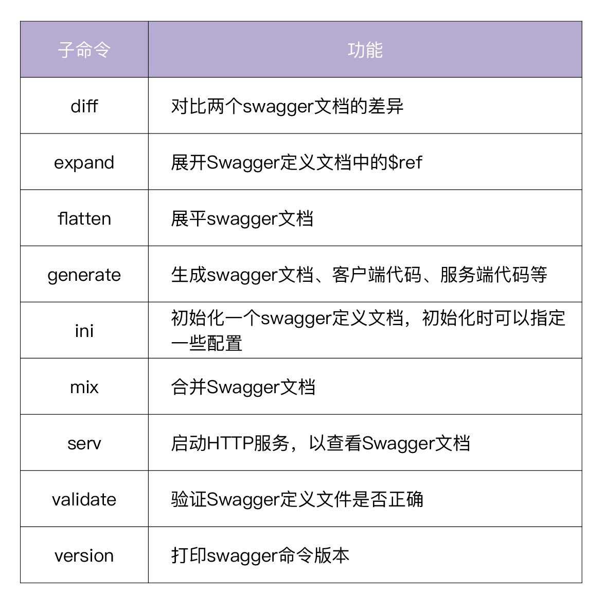
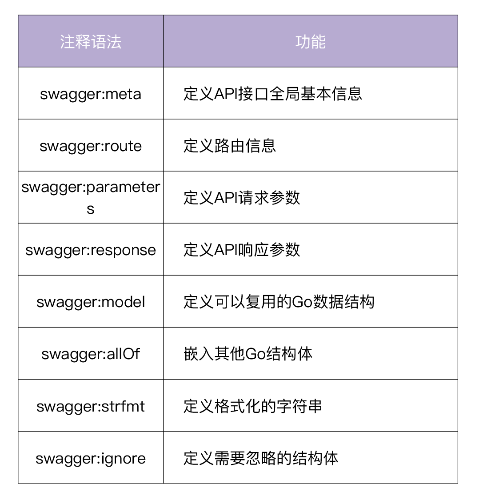
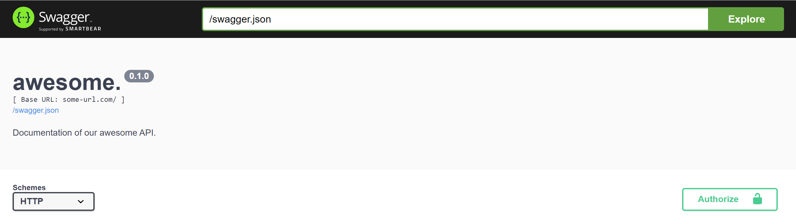
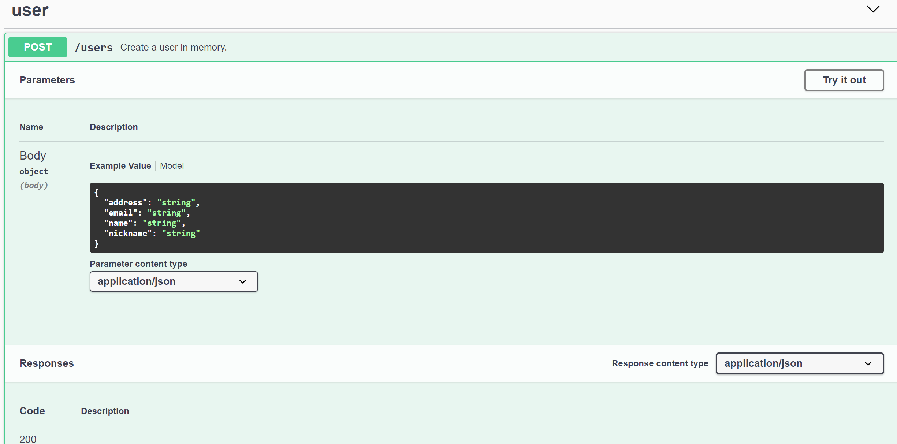
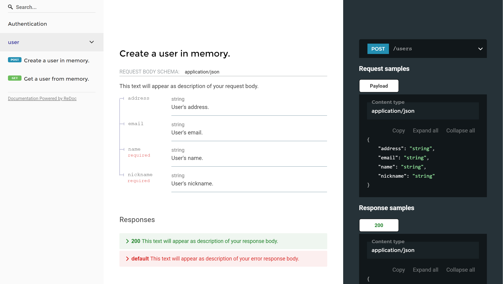
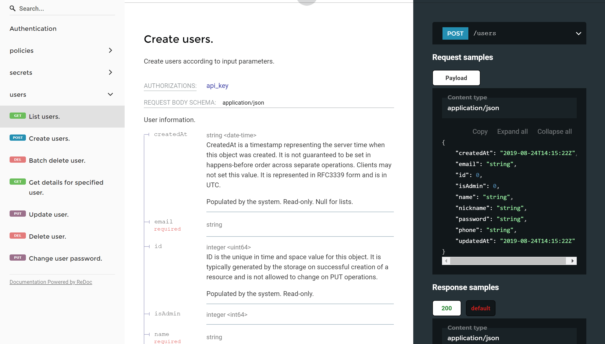
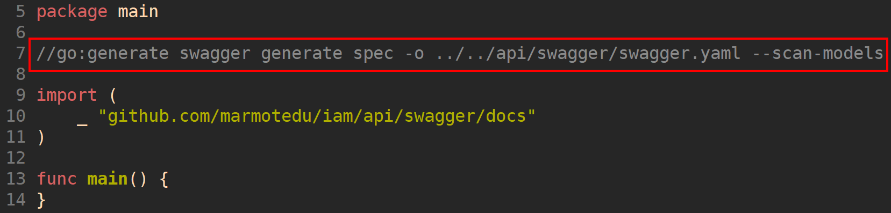

- 00 开篇词 从 0 开始搭建一个企业级 Go 应用.md.html
- 01 IAM系统概述：我们要实现什么样的 Go 项目？.md.html
- 02 环境准备：如何安装和配置一个基本的 Go 开发环境？.md.html
- 03 项目部署：如何快速部署 IAM 系统？.md.html
- 04 规范设计（上）：项目开发杂乱无章，如何规范？.md.html
- 05 规范设计（下）：commit 信息风格迥异、难以阅读，如何规范？.md.html
- 06 目录结构设计：如何组织一个可维护、可扩展的代码目录？.md.html
- 07 工作流设计：如何设计合理的多人开发模式？.md.html
- 08 研发流程设计（上）：如何设计 Go 项目的开发流程？.md.html
- 09 研发流程设计（下）：如何管理应用的生命周期？.md.html
- 10 设计方法：怎么写出优雅的 Go 项目？.md.html
- 11 设计模式：Go常用设计模式概述.md.html
- 12 API 风格（上）：如何设计RESTful API？.md.html
- 13 API 风格（下）：RPC API介绍.md.html
- 14 项目管理：如何编写高质量的Makefile？.md.html
- 15 研发流程实战：IAM项目是如何进行研发流程管理的？.md.html
- 16 代码检查：如何进行静态代码检查？.md.html
- 17 API 文档：如何生成 Swagger API 文档 ？.md.html
- 18 错误处理（上）：如何设计一套科学的错误码？.md.html
- 19 错误处理（下）：如何设计错误包？.md.html
- 20 日志处理（上）：如何设计日志包并记录日志？.md.html
- 21 日志处理（下）：手把手教你从 0 编写一个日志包.md.html
- 22 应用构建三剑客：Pflag、Viper、Cobra 核心功能介绍.md.html
- 23 应用构建实战：如何构建一个优秀的企业应用框架？.md.html
- 24 Web 服务：Web 服务核心功能有哪些，如何实现？.md.html
- 25 认证机制：应用程序如何进行访问认证？.md.html
- 26 IAM项目是如何设计和实现访问认证功能的？.md.html
- 27 权限模型：5大权限模型是如何进行资源授权的？.md.html
- 28 控制流（上）：通过iam-apiserver设计，看Web服务的构建.md.html
- 29 控制流（下）：iam-apiserver服务核心功能实现讲解.md.html
- 30 ORM：CURD 神器 GORM 包介绍及实战.md.html
- 31 数据流：通过iam-authz-server设计，看数据流服务的设计.md.html
- 32 数据处理：如何高效处理应用程序产生的数据？.md.html
- 33 SDK 设计（上）：如何设计出一个优秀的 Go SDK？.md.html
- 34 SDK 设计（下）：IAM项目Go SDK设计和实现.md.html
- 35 效率神器：如何设计和实现一个命令行客户端工具？.md.html
- 36 代码测试（上）：如何编写 Go 语言单元测试和性能测试用例？.md.html
- 37 代码测试（下）：Go 语言其他测试类型及 IAM 测试介绍.md.html
- 38 性能分析（上）：如何分析 Go 语言代码的性能？.md.html
- 39 性能分析（下）：API Server性能测试和调优实战.md.html
- 40 软件部署实战（上）：部署方案及负载均衡、高可用组件介绍.md.html
- 41 软件部署实战（中）：IAM 系统生产环境部署实战.md.html
- 42 软件部署实战（下）：IAM系统安全加固、水平扩缩容实战.md.html
- 43 技术演进（上）：虚拟化技术演进之路.md.html
- 44 技术演进（下）：软件架构和应用生命周期技术演进之路.md.html
- 45 基于Kubernetes的云原生架构设计.md.html
- 46 如何制作Docker镜像？.md.html
- 47 如何编写Kubernetes资源定义文件？.md.html
- 48 IAM 容器化部署实战.md.html
- 49 服务编排（上）：Helm服务编排基础知识.md.html
- 50 服务编排（下）：基于Helm的服务编排部署实战.md.html
- 51 基于 GitHub Actions 的 CI 实战.md.html
- 特别放送 Go Modules依赖包管理全讲.md.html
- 特别放送 Go Modules实战.md.html
- 特别放送 IAM排障指南.md.html
- 特别放送 分布式作业系统设计和实现.md.html
- 特别放送 给你一份Go项目中最常用的Makefile核心语法.md.html
- 特别放送 给你一份清晰、可直接套用的Go编码规范.md.html
- 直播加餐 如何从小白进阶成 Go 语言专家？.md.html
- 结束语 如何让自己的 Go 研发之路走得更远？.md.html
- 捐赠
17 API 文档：如何生成 Swagger API 文档 ？
你好，我是孔令飞。
作为一名开发者，我们通常讨厌编写文档，因为这是一件重复和缺乏乐趣的事情。但是在开发过程中，又有一些文档是我们必须要编写的，比如API文档。
一个企业级的Go后端项目，通常也会有个配套的前端。为了加快研发进度，通常是后端和前端并行开发，这就需要后端开发者在开发后端代码之前，先设计好API接口，提供给前端。所以在设计阶段，我们就需要生成API接口文档。
一个好的API文档，可以减少用户上手的复杂度，也意味着更容易留住用户。好的API文档也可以减少沟通成本，帮助开发者更好地理解API的调用方式，从而节省时间，提高开发效率。这时候，我们一定希望有一个工具能够帮我们自动生成API文档，解放我们的双手。Swagger就是这么一个工具，可以帮助我们生成易于共享且具有足够描述性的API文档。
接下来，我们就来看下，如何使用Swagger生成API文档。
Swagger介绍
Swagger是一套围绕OpenAPI规范构建的开源工具，可以设计、构建、编写和使用REST API。Swagger包含很多工具，其中主要的Swagger工具包括：
- Swagger编辑器：基于浏览器的编辑器，可以在其中编写OpenAPI规范，并实时预览API文档。https://editor.swagger.io 就是一个Swagger编辑器，你可以尝试在其中编辑和预览API文档。
- Swagger UI：将OpenAPI 规范呈现为交互式API文档，并可以在浏览器中尝试API调用。
- Swagger Codegen：根据OpenAPI规范，生成服务器存根和客户端代码库，目前已涵盖了40多种语言。
Swagger和OpenAPI的区别
我们在谈到Swagger时，也经常会谈到OpenAPI。那么二者有什么区别呢？
OpenAPI是一个API规范，它的前身叫Swagger规范，通过定义一种用来描述API格式或API定义的语言，来规范RESTful服务开发过程，目前最新的OpenAPI规范是OpenAPI 3.0（也就是Swagger 2.0规范）。
OpenAPI规范规定了一个API必须包含的基本信息，这些信息包括：
- 对API的描述，介绍API可以实现的功能。
- 每个API上可用的路径（/users）和操作（GET /users，POST /users）。
- 每个API的输入/返回的参数。
- 验证方法。
- 联系信息、许可证、使用条款和其他信息。
所以，你可以简单地这么理解：OpenAPI是一个API规范，Swagger则是实现规范的工具。
另外，要编写Swagger文档，首先要会使用Swagger文档编写语法，因为语法比较多，这里就不多介绍了，你可以参考Swagger官方提供的OpenAPI Specification来学习。
用go-swagger来生成Swagger API文档
在Go项目开发中，我们可以通过下面两种方法来生成Swagger API文档：
第一，如果你熟悉Swagger语法的话，可以直接编写JSON/YAML格式的Swagger文档。建议选择YAML格式，因为它比JSON格式更简洁直观。
第二，通过工具生成Swagger文档，目前可以通过swag和go-swagger两个工具来生成。
对比这两种方法，直接编写Swagger文档，不比编写Markdown格式的API文档工作量小，我觉得不符合程序员“偷懒”的习惯。所以，本专栏我们就使用go-swagger工具，基于代码注释来自动生成Swagger文档。为什么选go-swagger呢？有这么几个原因：
- go-swagger比swag功能更强大：go-swagger提供了更灵活、更多的功能来描述我们的API。
- 使我们的代码更易读：如果使用swag，我们每一个API都需要有一个冗长的注释，有时候代码注释比代码还要长，但是通过go-swagger我们可以将代码和注释分开编写，一方面可以使我们的代码保持简洁，清晰易读，另一方面我们可以在另外一个包中，统一管理这些Swagger API文档定义。
- 更好的社区支持：go-swagger目前有非常多的Github star数，出现Bug的概率很小，并且处在一个频繁更新的活跃状态。
你已经知道了，go-swagger是一个功能强大的、高性能的、可以根据代码注释生成Swagger API文档的工具。除此之外，go-swagger还有很多其他特性：
- 根据Swagger定义文件生成服务端代码。
- 根据Swagger定义文件生成客户端代码。
- 校验Swagger定义文件是否正确。
- 启动一个HTTP服务器，使我们可以通过浏览器访问API文档。
- 根据Swagger文档定义的参数生成Go model结构体定义。
可以看到，使用go-swagger生成Swagger文档，可以帮助我们减少编写文档的时间，提高开发效率，并能保证文档的及时性和准确性。
这里需要注意，如果我们要对外提供API的Go SDK，可以考虑使用go-swagger来生成客户端代码。但是我觉得go-swagger生成的服务端代码不够优雅，所以建议你自行编写服务端代码。
目前，有很多知名公司和组织的项目都使用了go-swagger，例如 Moby、CoreOS、Kubernetes、Cilium等。
安装Swagger工具
go-swagger通过swagger命令行工具来完成其功能，swagger安装方法如下：
$ go get -u github.com/go-swagger/go-swagger/cmd/swagger
$ swagger version
dev
swagger命令行工具介绍
swagger命令格式为swagger [OPTIONS] <command>。可以通过swagger -h查看swagger使用帮助。swagger提供的子命令及功能见下表：

如何使用swagger命令生成Swagger文档？
go-swagger通过解析源码中的注释来生成Swagger文档，go-swagger的详细注释语法可参考官方文档。常用的有如下几类注释语法：

解析注释生成Swagger文档
swagger generate命令会找到main函数，然后遍历所有源码文件，解析源码中与Swagger相关的注释，然后自动生成swagger.json/swagger.yaml文件。
这一过程的示例代码为gopractise-demo/swagger。目录下有一个main.go文件，定义了如下API接口：
package main
import (
"fmt"
"log"
"net/http"
"github.com/gin-gonic/gin"
"github.com/marmotedu/gopractise-demo/swagger/api"
// This line is necessary for go-swagger to find your docs!
_ "github.com/marmotedu/gopractise-demo/swagger/docs"
)
var users []*api.User
func main() {
r := gin.Default()
r.POST("/users", Create)
r.GET("/users/:name", Get)
log.Fatal(r.Run(":5555"))
}
// Create create a user in memory.
func Create(c *gin.Context) {
var user api.User
if err := c.ShouldBindJSON(&user); err != nil {
c.JSON(http.StatusBadRequest, gin.H{"message": err.Error(), "code": 10001})
return
}
for _, u := range users {
if u.Name == user.Name {
c.JSON(http.StatusBadRequest, gin.H{"message": fmt.Sprintf("user %s already exist", user.Name), "code": 10001})
return
}
}
users = append(users, &user)
c.JSON(http.StatusOK, user)
}
// Get return the detail information for a user.
func Get(c *gin.Context) {
username := c.Param("name")
for _, u := range users {
if u.Name == username {
c.JSON(http.StatusOK, u)
return
}
}
c.JSON(http.StatusBadRequest, gin.H{"message": fmt.Sprintf("user %s not exist", username), "code": 10002})
}
main包中引入的User struct位于gopractise-demo/swagger/api目录下的user.go文件：
// Package api defines the user model.
package api
// User represents body of User request and response.
type User struct {
// User's name.
// Required: true
Name string `json:"name"`
// User's nickname.
// Required: true
Nickname string `json:"nickname"`
// User's address.
Address string `json:"address"`
// User's email.
Email string `json:"email"`
}
// Required: true说明字段是必须的，生成Swagger文档时，也会在文档中声明该字段是必须字段。
为了使代码保持简洁，我们在另外一个Go包中编写带go-swagger注释的API文档。假设该Go包名字为docs，在开始编写Go API注释之前，需要在main.go文件中导入docs包：
_ "github.com/marmotedu/gopractise-demo/swagger/docs"
通过导入docs包，可以使go-swagger在递归解析main包的依赖包时，找到docs包，并解析包中的注释。
在gopractise-demo/swagger目录下，创建docs文件夹：
$ mkdir docs
$ cd docs
在docs目录下，创建一个doc.go文件，在该文件中提供API接口的基本信息：
// Package docs awesome.
//
// Documentation of our awesome API.
//
// Schemes: http, https
// BasePath: /
// Version: 0.1.0
// Host: some-url.com
//
// Consumes:
// - application/json
//
// Produces:
// - application/json
//
// Security:
// - basic
//
// SecurityDefinitions:
// basic:
// type: basic
//
// swagger:meta
package docs
Package docs后面的字符串 awesome 代表我们的HTTP服务名。Documentation of our awesome API是我们API的描述。其他都是go-swagger可识别的注释，代表一定的意义。最后以swagger:meta注释结束。
编写完doc.go文件后，进入gopractise-demo/swagger目录，执行如下命令，生成Swagger API文档，并启动HTTP服务，在浏览器查看Swagger：
$ swagger generate spec -o swagger.yaml
$ swagger serve --no-open -F=swagger --port 36666 swagger.yaml
2020/10/20 23:16:47 serving docs at http://localhost:36666/docs
- -o：指定要输出的文件名。swagger会根据文件名后缀.yaml或者.json，决定生成的文件格式为YAML或JSON。
- –no-open：因为是在Linux服务器下执行命令，没有安装浏览器，所以使–no-open禁止调用浏览器打开URL。
- -F：指定文档的风格，可选swagger和redoc。我选用了redoc，因为觉得redoc格式更加易读和清晰。
- –port：指定启动的HTTP服务监听端口。
打开浏览器，访问http://localhost:36666/docs ，如下图所示：

如果我们想要JSON格式的Swagger文档，可执行如下命令，将生成的swagger.yaml转换为swagger.json：
$ swagger generate spec -i ./swagger.yaml -o ./swagger.json
接下来，我们就可以编写API接口的定义文件（位于gopractise-demo/swagger/docs/user.go文件中）：
package docs
import (
"github.com/marmotedu/gopractise-demo/swagger/api"
)
// swagger:route POST /users user createUserRequest
// Create a user in memory.
// responses:
// 200: createUserResponse
// default: errResponse
// swagger:route GET /users/{name} user getUserRequest
// Get a user from memory.
// responses:
// 200: getUserResponse
// default: errResponse
// swagger:parameters createUserRequest
type userParamsWrapper struct {
// This text will appear as description of your request body.
// in:body
Body api.User
}
// This text will appear as description of your request url path.
// swagger:parameters getUserRequest
type getUserParamsWrapper struct {
// in:path
Name string `json:"name"`
}
// This text will appear as description of your response body.
// swagger:response createUserResponse
type createUserResponseWrapper struct {
// in:body
Body api.User
}
// This text will appear as description of your response body.
// swagger:response getUserResponse
type getUserResponseWrapper struct {
// in:body
Body api.User
}
// This text will appear as description of your error response body.
// swagger:response errResponse
type errResponseWrapper struct {
// Error code.
Code int `json:"code"`
// Error message.
Message string `json:"message"`
}
user.go文件说明：
- swagger:route：
swagger:route代表API接口描述的开始，后面的字符串格式为HTTP方法 URL Tag ID。可以填写多个tag，相同tag的API接口在Swagger文档中会被分为一组。ID是一个标识符，swagger:parameters是具有相同ID的swagger:route的请求参数。swagger:route下面的一行是该API接口的描述，需要以英文点号为结尾。responses:定义了API接口的返回参数，例如当HTTP状态码是200时，返回createUserResponse，createUserResponse会跟swagger:response进行匹配，匹配成功的swagger:response就是该API接口返回200状态码时的返回。 - swagger:response：
swagger:response定义了API接口的返回，例如getUserResponseWrapper，关于名字，我们可以根据需要自由命名，并不会带来任何不同。getUserResponseWrapper中有一个Body字段，其注释为// in:body，说明该参数是在HTTP Body中返回。swagger:response之上的注释会被解析为返回参数的描述。api.User自动被go-swagger解析为Example Value和Model。我们不用再去编写重复的返回字段，只需要引用已有的Go结构体即可，这也是通过工具生成Swagger文档的魅力所在。 - swagger:parameters：
swagger:parameters定义了API接口的请求参数，例如userParamsWrapper。userParamsWrapper之上的注释会被解析为请求参数的描述，// in:body代表该参数是位于HTTP Body中。同样，userParamsWrapper结构体名我们也可以随意命名，不会带来任何不同。swagger:parameters之后的createUserRequest会跟swagger:route的ID进行匹配，匹配成功则说明是该ID所在API接口的请求参数。
进入gopractise-demo/swagger目录，执行如下命令，生成Swagger API文档，并启动HTTP服务，在浏览器查看Swagger：
$ swagger generate spec -o swagger.yaml
$ swagger serve --no-open -F=swagger --port 36666 swagger.yaml
2020/10/20 23:28:30 serving docs at http://localhost:36666/docs
打开浏览器，访问 http://localhost:36666/docs ，如下图所示：

上面我们生成了swagger风格的UI界面，我们也可以使用redoc风格的UI界面，如下图所示：

go-swagger其他常用功能介绍
上面，我介绍了swagger最常用的generate、serve命令，关于swagger其他有用的命令，这里也简单介绍一下。
- 对比Swagger文档
$ swagger diff -d change.log swagger.new.yaml swagger.old.yaml
$ cat change.log
BREAKING CHANGES:
=================
/users:post Request - Body.Body.nickname.address.email.name.Body : User - Deleted property
compatibility test FAILED: 1 breaking changes detected
- 生成服务端代码
我们也可以先定义Swagger接口文档，再用swagger命令，基于Swagger接口文档生成服务端代码。假设我们的应用名为go-user，进入gopractise-demo/swagger目录，创建go-user目录，并生成服务端代码：
$ mkdir go-user
$ cd go-user
$ swagger generate server -f ../swagger.yaml -A go-user
上述命令会在当前目录生成cmd、restapi、models文件夹，可执行如下命令查看server组件启动方式：
$ go run cmd/go-user-server/main.go -h
- 生成客户端代码
在go-user目录下执行如下命令：
$ swagger generate client -f ../swagger.yaml -A go-user
上述命令会在当前目录生成client，包含了API接口的调用函数，也就是API接口的Go SDK。
- 验证Swagger文档是否合法
$ swagger validate swagger.yaml
2020/10/21 09:53:18
The swagger spec at "swagger.yaml" is valid against swagger specification 2.0
- 合并Swagger文档
$ swagger mixin swagger_part1.yaml swagger_part2.yaml
IAM Swagger文档
IAM的Swagger文档定义在iam/api/swagger/docs目录下，遵循go-swagger规范进行定义。
iam/api/swagger/docs/doc.go文件定义了更多Swagger文档的基本信息，比如开源协议、联系方式、安全认证等。
更详细的定义，你可以直接查看iam/api/swagger/docs目录下的Go源码文件。
为了便于生成文档和启动HTTP服务查看Swagger文档，该操作被放在Makefile中执行（位于iam/scripts/make-rules/swagger.mk文件中）：
.PHONY: swagger.run
swagger.run: tools.verify.swagger
@echo "===========> Generating swagger API docs"
@swagger generate spec --scan-models -w $(ROOT_DIR)/cmd/genswaggertypedocs -o $(ROOT_DIR)/api/swagger/swagger.yaml
.PHONY: swagger.serve
swagger.serve: tools.verify.swagger
@swagger serve -F=redoc --no-open --port 36666 $(ROOT_DIR)/api/swagger/swagger.yaml
Makefile文件说明：
- tools.verify.swagger：检查Linux系统是否安装了go-swagger的命令行工具swagger，如果没有安装则运行go get安装。
- swagger.run：运行
swagger generate spec命令生成Swagger文档swagger.yaml，运行前会检查swagger是否安装。--scan-models指定生成的文档中包含带有swagger:model 注释的Go Models。-w指定swagger命令运行的目录。 - swagger.serve：运行
swagger serve命令打开Swagger文档swagger.yaml，运行前会检查swagger是否安装。
在iam源码根目录下执行如下命令，即可生成并启动HTTP服务查看Swagger文档：
$ make swagger
$ make serve-swagger
2020/10/21 06:45:03 serving docs at http://localhost:36666/docs
打开浏览器，打开http://x.x.x.x:36666/docs查看Swagger文档，x.x.x.x是服务器的IP地址，如下图所示：

IAM的Swagger文档，还可以通过在iam源码根目录下执行go generate ./...命令生成，为此，我们需要在iam/cmd/genswaggertypedocs/swagger_type_docs.go文件中，添加//go:generate注释。如下图所示：

总结
在做Go服务开发时，我们要向前端或用户提供API文档，手动编写API文档工作量大，也难以维护。所以，现在很多项目都是自动生成Swagger格式的API文档。提到Swagger，很多开发者不清楚其和OpenAPI的区别，所以我也给你总结了：OpenAPI是一个API规范，Swagger则是实现规范的工具。
在Go中，用得最多的是利用go-swagger来生成Swagger格式的API文档。go-swagger包含了很多语法，我们可以访问Swagger 2.0进行学习。学习完Swagger 2.0的语法之后，就可以编写swagger注释了，之后可以通过
$ swagger generate spec -o swagger.yaml
来生成swagger文档 swagger.yaml。通过
$ swagger serve --no-open -F=swagger --port 36666 swagger.yaml
来提供一个前端界面，供我们访问swagger文档。
为了方便管理，我们可以将 swagger generate spec 和 swagger serve 命令加入到Makefile文件中，通过Makefile来生成Swagger文档，并提供给前端界面。
课后练习
- 尝试将你当前项目的一个API接口，用go-swagger生成swagger格式的API文档，如果中间遇到问题，欢迎在留言区与我讨论。
- 思考下，为什么IAM项目的swagger定义文档会放在iam/api/swagger/docs目录下，这样做有什么好处？
欢迎你在留言区与我交流讨论，我们下一讲见。
© 2019 - 2023 Liangliang Lee. Powered by gin and hexo-theme-book.